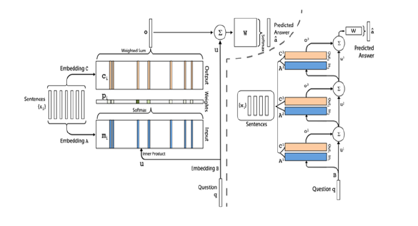

Deep learning Approach for Question and Answering (QA) Systems
Skills Employed
- Modelling Techniques: N-gram model, LSTM, LSTM+attention, Sequence-to-sequence, Memory Network
- Text Processing Techniques: Preprocessing (Lemmatization, Stop Word Removal, Removal of punctuation, numbers etc.), N-gram analysis
- Tech Stack: Python
- Libraries: Numpy, Pandas, Sklearn, NLTK, PyTorch
Github Link
The Github repository can be accessed from here.
Introduction
Question answering is one of the most challenging applications we have in Natural Language Processing. It is widely used in applications like information retrieval and entity extraction. It is also used as the back-end framework for systems like chatbots and for simulating human-like conversations. While it is ambitious to create and evaluate the performance of an agent in general dialogue, it is relatively easier to evaluate its responses to input questions. This enables us to test different capabilities of learning algorithms, under a common framework. Using QA frameworks, we aim to create a framework capable of open-domain question answering i.e. answering arbitrary questions with respect to arbitrary documents. Question answering systems enable users to retrieve exact answers for questions posed in natural language. They automatically answer questions asked by humans in natural language by referring to either a pre-structured database or a collection of documents/text-pieces written in a natural language. Question answering (QA) is a complex natural language processing (NLP) task. It requires an understanding of the meaning of a text piece (story) along with the ability to reason over relevant facts contained within the leading stories. It then employs a model that can answer questions based on logic, reasoning and even understanding of natural language.
Data
For building all the models in this report, we use the data from the Facebook bAbI project. bAbI is a carefully-designed set of 20 QA tasks. Each of these tasks consist of several context-questionanswer triplets, prepared and released by Facebook. Each task tests a different skill that a question answering model should have. The bAbI dataset comprises of synthetically generated stories about activity in a simulated world. This makes the vocabulary of this dataset very limited. Moreover, the sentence forms are very constrained. These limitations make this dataset an ideal dataset for rapid experiments and developing models. However, they raise questions about the ability to generalize results on bAbI to Question Answering scenarios in a less stringent/defined environment. The models are built with the intention that they perform well on the test data. For this purpose, we have split the given QA sets into train and test dataset. Even if a model shows a good performance here, it is not sufficient to conclude that the model would also exhibit this ability on real world text data.
Methodology
In this project, we employed 5 different models to form a QA system on the Facebook bAbI dataset. An overview of each model has been stated below.
N-gram model
An N-gram model constructs a sequence of N words that occur in a sequential combination in the given text. We used a N-gram model to define the baseline. We trained the N-gram model using both unigrams (1-gram) and bigrams (2-gram) individually to produce answers for the different tasks. For this, we selected only those sentences that had at least one common word with the story. We then constructed a bag-of-unigrams and a bigrams respectively from the stories. This was then fed into a Linear Support Vector Classification (SVC) model. We constructed two separate models using unigrams and bigrams respectively and selected the better-performing model. The linear classifier was used to predict the answers using the features extracted from the vocabulary of the stories. Since the model uses only the vocabulary as the features, it is predicted to perform sub-optimally in tasks that rely on reasoning beyond language.
LSTM
To capture the semantic structure of the stories and the question, we experimented with LSTM based sentence embedding. LSTM is a type of recurrent neural networks, that process the input word by word and update hidden state to capture the structure of the sequence of words in the sentence. The output of this model was a probability vector of the dimension of vocabulary. A graphical respresentation of the model has been given above.
Seq-2-Seq
To improve the performance of our models, we implemented a sequence-to-sequence model. The benefit of this framework over the other models is that it does not treat the answers as single-words and can thus incorporate comma-separated lists as answers, especially for tasks 8 (Lists/Sets) and 19 (Path Finding). The figure above illustrates how a sequence-to-sequence network can be trained on a question answering task. The basic architecture of a seq-2-seq includes an RNN encoder (LSTM cell) that processes the stories (all concatenated together), followed by a special question-start symbol (SOQ), and then the question. The special SOS symbol tells the network to start decoding, with the decoder’s initial state being the final state of the encoder. The decoder produces an answer sequence, followed by the special stop symbol EOS that indicates that processing must end. The network is trained using cross-entropy error on the decoder output, as compared with the correct answer sequence. During training, the decoder also receives the correct answer as input following the SOS symbol. During validation and testing, the correct answer is not provided: we only provide the SOS symbol. At subsequent steps, the output of time step t is fed to the decoder as the input at time step t + 1.
LSTM+attention mechanism
The LSTM model suffers in some tasks as the length of stories increases as facts mentioned earlier in the story suffer from diminishing gradient problem. The bAbI dataset has information about the specific stories required to answer the question. In this model we used this supporting information to pay attention to stories that are relevant. To achieve this we extended the LSTM model with attention mechanism. This model targets to learn two objectives. It tries to learn which story is relevant given the question, and given relevant stories it tries to learn to get closer to the answer. During training only the relevant sentences are fed as input into the previously described LSTM sentence embedding model. The mechanism is trained using the relevant sentence supervision signal provided with each example. For every story s, the model predicts the probability that the story is relevant in the example. During inference, any story with relevance probability greater than 0.5 was used to predict the answer. If no story had probability greater than 0.5 then the top two stories with highest probabilities were used. We used a joint loss function and optimized this loss using Adam optimizer. Since the vocabulary of the bAbI dataset is very small, we did not use any existing word embeddings and trained our own embeddings. The model is depicted graphically in the figure above.
End-to-end Memory Network
An end-to-end memory network, is a kind of memory network which uses simpler input feature maps and memory generalization steps than those used for dynamic memory networks. The simplification allowed for faster training and a greater range of experimentation within the scope of a course project. Furthermore, end-to-end networks have shown state-of-the art performance for weak supervision on the bAbI dataset. As we are interested in examining the greater generalizability of the weak supervision use case, end-to-end memory networks present a good choice for the main architecture for the project.
Results
A comprehensive table comparing the performance of each of these models is given below.
Impact
This project was executed as a part of our coursework at Duke Univeristy for the Deep Learning Course.
References
The following papers and literature were referred to, for execution and solution approach design.
- Jason Weston, Antoine Bordes, Sumit Chopra, Alexander M. Rush, Bart van Merrienboer, Armand Joulin, Tomas Mikolov. Towards AI-complete Question Answering : A Set of Prerequisite Toy Tasks. ICLR 2016
- Jason Weston, Sumit Chopra, Antoine Bordes. Memory Networks. ICLR 2015
- Ankit Kumar, Peter Ondruska, Mohit Iyyer, James Bradbury, Ishaan Gulrajani, Victor Zhong, Romain Paulus, Richard Socher Ask Me Anything: Dynamic Memory Networks for Natural Language Processing.arXiv:1506.07285 Sainbayar Sukhbaatar, Arthur Szlam, Jason Weston, Rob Fergus. End-To-End Memory Networks. NIPS 2015.
- Eylon Stroh and Priyank Mathur. Question Answering Using Deep Learning. 2016.
- Fan Yang, Jiazhong Nie, William W. Cohen, Ni Lao Learning to Organize Knowledge and Answer Questions with N-Gram Machines. arXiv:1711.06744
- Karl Moritz Hermann, Tomas Kocisky, Edward Grefenstette, Lasse Espeholt, Will Kay, Mustafa Suleyman, Phil Blunsom. Teaching Machines to Read and Comprehend.arXiv:1506.03340
- Sepp Hochreiter and Jurgen Schmidhuber. Long short-term memory.Neural computation, 9(8): 1735–1780, 1997
- Matthew Richardson , Christopher J. C. Burges , Erin Renshaw. MCTest: A challenge dataset for the open-domain machine comprehension of text. EMNLP, pp. 193–203, 2013